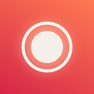

Get comfortable on camera. Record yourself talking for a minute each day, then watch how you improve.
Setting up the app on your phone. This takes a few seconds.
Installed. Find Daily Take on your home screen or app drawer.
Open appYour recordings will show up here. Start with today.
With an OpenAI key, each take you save gets a score and tips. Only the audio is sent to OpenAI, never the video, and only after you tap Save. Retakes you discard are never sent.
Make a key just for this app, and set a monthly budget limit in your OpenAI account, so even a leaked key can't cost much. The key is stored only on this device and never put in the app's code.
The app works out the score itself from four measurements, 25 points each, so every take is scored the same way. The AI writes the tips.